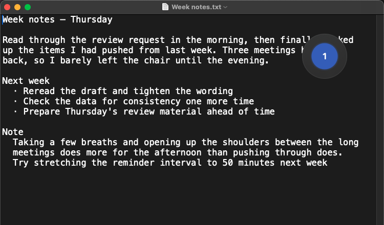
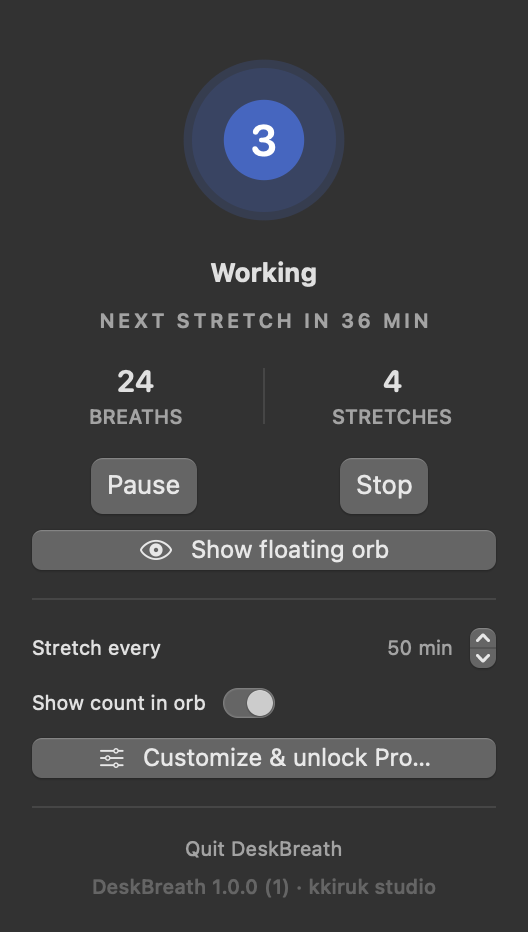
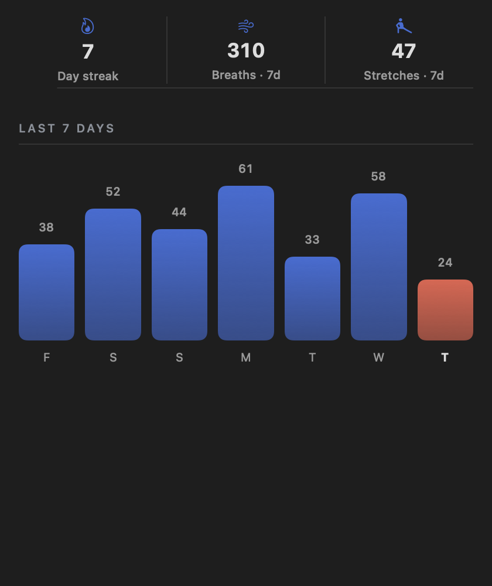

On iPhone it tells you with haptics, not the screen.


One circle in the menu bar, counting four seconds in and six seconds out. You keep working; it keeps the rhythm.
Free to start · iPhone and Mac · No subscription
A longer exhale is what settles you, so that's the default. Switch to box breathing or 4-7-8, or set the seconds yourself. Each phase change arrives as its own haptic, so you never have to watch the screen.



Everything you need to start
One purchase, no subscription